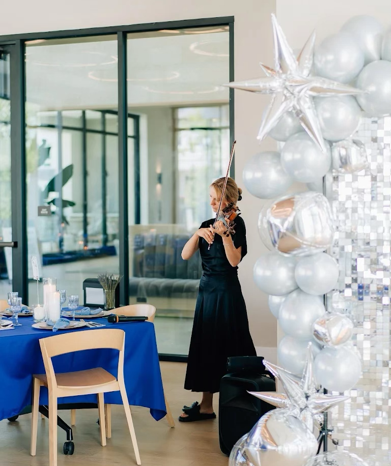
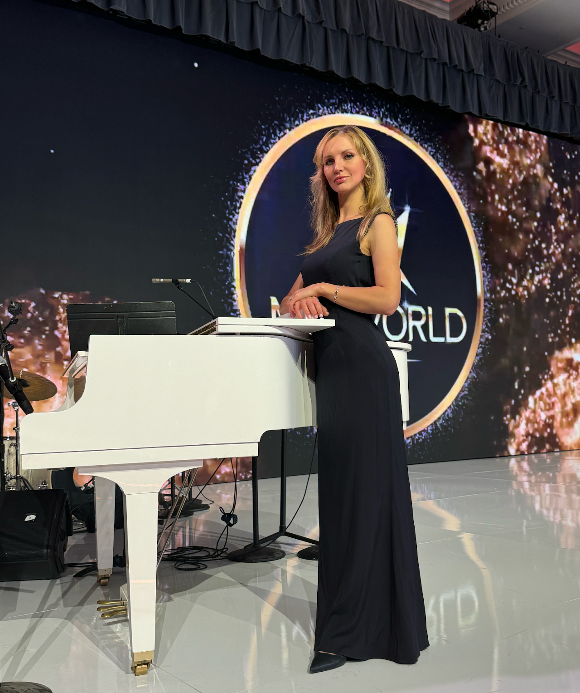

Meet Mila
A life dedicated to music, performance, and inspiring the next generation of violinists.
Meet Mila
Mila is a passionate and talented violinist whose music captivates hearts and elevates every occasion. With years of dedication to her craft, Mila has mastered the art of creating unforgettable moments through her performances. Her repertoire spans classical masterpieces, contemporary hits, and personalized arrangements, making her the perfect choice for weddings, anniversaries, corporate events, and more. Mila's violin is more than an instrument—it's her voice, expressing emotion, elegance, and artistry with every note.


Lyudmila Antonuk: A Virtuoso Violinist and Passionate Educator
With over 25 years of expertise spanning classical, contemporary, popular, and folk music, Lyudmila Antonuk is a masterful violinist whose artistry captivates audiences worldwide. A distinguished graduate of the Kyiv National Tchaikovsky Academy of Music, Lyudmila holds an advanced degree and has collaborated with renowned orchestras, ensembles, and artists, showcasing her versatility and musical brilliance.
As an educator, Lyudmila brings 18 years of experience teaching at a prestigious music school in Kyiv, where her personalized and inspiring approach to instruction has nurtured numerous prize-winning students. Many of her protégés have gained acceptance into top-tier music institutions, a testament to her dedication to cultivating the next generation of talent.
Lyudmila's performing career is equally remarkable. From intimate weddings and corporate events to grand private concerts, she delivers unforgettable musical experiences. Her repertoire effortlessly weaves together classical masterpieces with the rich traditions of Jewish, Armenian, and Ukrainian music, making her performances a blend of elegance and cultural depth.

"Music expresses that which cannot be put into words and cannot remain silent."
- Victor Hugo